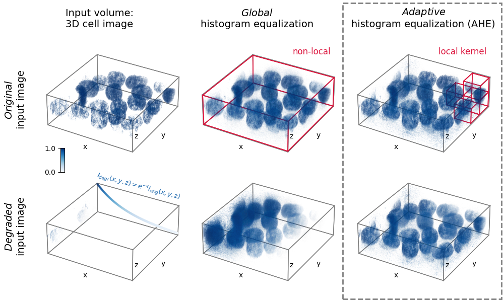

Source
SourceNote
Click here to download the full example code or to run this example in your browser via Binder
3D adaptive histogram equalization¶
Adaptive histogram equalization (AHE) can be used to improve the local contrast of an image 1. Specifically, AHE can be useful for normalizing intensities across images. This example compares the results of applying global histogram equalization and AHE to a 3D image and a synthetically degraded version of it.
import matplotlib.pyplot as plt
import matplotlib.patches as patches
from matplotlib import cm, colors
from mpl_toolkits.mplot3d import Axes3D
import numpy as np
from skimage import exposure, util
import imageio as io
# Prepare data and apply histogram equalization
from skimage.data import cells3d
im_orig = util.img_as_float(cells3d()[:, 1, :, :]) # grab just the nuclei
# Reorder axis order from (z, y, x) to (x, y, z)
im_orig = im_orig.transpose()
# Rescale image data to range [0, 1]
im_orig = np.clip(im_orig,
np.percentile(im_orig, 5),
np.percentile(im_orig, 95))
im_orig = (im_orig - im_orig.min()) / (im_orig.max() - im_orig.min())
# Degrade image by applying exponential intensity decay along x
sigmoid = np.exp(-3 * np.linspace(0, 1, im_orig.shape[0]))
im_degraded = (im_orig.T * sigmoid).T
# Set parameters for AHE
# Determine kernel sizes in each dim relative to image shape
kernel_size = (im_orig.shape[0] // 5,
im_orig.shape[1] // 5,
im_orig.shape[2] // 2)
kernel_size = np.array(kernel_size)
clip_limit = 0.9
# Perform histogram equalization
im_orig_he, im_degraded_he = \
[exposure.equalize_hist(im)
for im in [im_orig, im_degraded]]
im_orig_ahe, im_degraded_ahe = \
[exposure.equalize_adapthist(im,
kernel_size=kernel_size,
clip_limit=clip_limit)
for im in [im_orig, im_degraded]]
# Define functions to help plot the data
def scalars_to_rgba(scalars, cmap, vmin=0., vmax=1., alpha=0.2):
"""
Convert array of scalars into array of corresponding RGBA values.
"""
norm = colors.Normalize(vmin=vmin, vmax=vmax)
scalar_map = cm.ScalarMappable(norm=norm, cmap=cmap)
rgbas = scalar_map.to_rgba(scalars)
rgbas[:, 3] = alpha
return rgbas
def plt_render_volume(vol, fig_ax, cmap,
vmin=0, vmax=1,
bin_widths=None, n_levels=20):
"""
Render a volume in a 3D matplotlib scatter plot.
Better would be to use napari.
"""
vol = np.clip(vol, vmin, vmax)
xs, ys, zs = np.mgrid[0:vol.shape[0]:bin_widths[0],
0:vol.shape[1]:bin_widths[1],
0:vol.shape[2]:bin_widths[2]]
vol_scaled = vol[::bin_widths[0],
::bin_widths[1],
::bin_widths[2]].flatten()
# Define alpha transfer function
levels = np.linspace(vmin, vmax, n_levels)
alphas = np.linspace(0, .7, n_levels)
alphas = alphas ** 11
alphas = (alphas - alphas.min()) / (alphas.max() - alphas.min())
alphas *= 0.8
# Group pixels by intensity and plot separately,
# as 3D scatter does not accept arrays of alpha values
for il in range(1, len(levels)):
sel = (vol_scaled >= levels[il - 1])
sel *= (vol_scaled <= levels[il])
if not np.max(sel):
continue
c = scalars_to_rgba(vol_scaled[sel], cmap,
vmin=vmin, vmax=vmax, alpha=alphas[il - 1])
fig_ax.scatter(xs.flatten()[sel],
ys.flatten()[sel],
zs.flatten()[sel],
c=c, s=0.5 * np.mean(bin_widths),
marker='o', linewidth=0)
# Create figure with subplots
cmap = 'Blues'
fig = plt.figure(figsize=(10, 6))
axs = [fig.add_subplot(2, 3, i + 1,
projection=Axes3D.name, facecolor="none")
for i in range(6)]
ims = [im_orig, im_orig_he, im_orig_ahe,
im_degraded, im_degraded_he, im_degraded_ahe]
# Prepare lines for the various boxes to be plotted
verts = np.array([[i, j, k] for i in [0, 1]
for j in [0, 1] for k in [0, 1]]).astype(np.float32)
lines = [np.array([i, j]) for i in verts
for j in verts if np.allclose(np.linalg.norm(i - j), 1)]
# "render" volumetric data
for iax, ax in enumerate(axs[:]):
plt_render_volume(ims[iax], ax, cmap, 0, 1, [2, 2, 2], 20)
# plot 3D box
rect_shape = np.array(im_orig.shape) + 2
for line in lines:
ax.plot((line * rect_shape)[:, 0] - 1,
(line * rect_shape)[:, 1] - 1,
(line * rect_shape)[:, 2] - 1,
linewidth=1, color='grey')
# Add boxes illustrating the kernels
ns = np.array(im_orig.shape) // kernel_size - 1
for axis_ind, vertex_ind, box_shape in zip([1] + [2] * 4,
[[0, 0, 0],
[ns[0] - 1, ns[1], ns[2] - 1],
[ns[0], ns[1] - 1, ns[2] - 1],
[ns[0], ns[1], ns[2] - 1],
[ns[0], ns[1], ns[2]]],
[np.array(im_orig.shape)]
+ [kernel_size] * 4):
for line in lines:
axs[axis_ind].plot(((line + vertex_ind) * box_shape)[:, 0],
((line + vertex_ind) * box_shape)[:, 1],
((line + vertex_ind) * box_shape)[:, 2],
linewidth=1.2, color='crimson')
# Plot degradation function
axs[3].scatter(xs=np.arange(len(sigmoid)),
ys=np.zeros(len(sigmoid)) + im_orig.shape[1],
zs=sigmoid * im_orig.shape[2],
s=5,
c=scalars_to_rgba(sigmoid,
cmap=cmap, vmin=0, vmax=1, alpha=1.)[:, :3])
# Subplot aesthetics (optimized for matplotlib 3.3)
for iax, ax in enumerate(axs[:]):
# Get rid of panes and axis lines
for dim_ax in [ax.xaxis, ax.yaxis, ax.zaxis]:
dim_ax.set_pane_color((1., 1., 1., 0.))
dim_ax.line.set_color((1., 1., 1., 0.))
# Define 3D axes limits, see https://github.com/
# matplotlib/matplotlib/issues/17172#issuecomment-617546105
xyzlim = np.array([ax.get_xlim3d(),
ax.get_ylim3d(),
ax.get_zlim3d()]).T
XYZlim = np.asarray([min(xyzlim[0]), max(xyzlim[1])])
ax.set_xlim3d(XYZlim)
ax.set_ylim3d(XYZlim)
ax.set_zlim3d(XYZlim * 0.5)
try:
ax.set_aspect('equal')
except NotImplementedError:
pass
ax.set_xlabel('x', labelpad=-20)
ax.set_ylabel('y', labelpad=-20)
ax.text2D(0.63, 0.2, "z", transform=ax.transAxes)
ax.set_xticks([])
ax.set_yticks([])
ax.set_zticks([])
ax.grid(False)
ax.elev = 30
plt.subplots_adjust(left=0.05,
bottom=-0.1,
right=1.01,
top=1.1,
wspace=-0.1,
hspace=-0.45)
# Highlight AHE
rect_ax = fig.add_axes([0, 0, 1, 1], facecolor='none')
rect_ax.set_axis_off()
rect = patches.Rectangle((0.68, 0.01), 0.315, 0.98,
edgecolor='grey', facecolor='none',
linewidth=2, linestyle='--')
rect_ax.add_patch(rect)
# Add text
rect_ax.text(0.19, 0.34, '$I_{degr}(x,y,z) = e^{-x}I_{orig}(x,y,z)$',
fontsize=9, rotation=-15,
color=scalars_to_rgba([0.8], cmap='Blues', alpha=1.)[0])
fc = {'size': 14}
rect_ax.text(0.03, 0.58, r'$\it{Original}$' + '\ninput image',
rotation=90, fontdict=fc, horizontalalignment='center')
rect_ax.text(0.03, 0.16, r'$\it{Degraded}$' + '\ninput image',
rotation=90, fontdict=fc, horizontalalignment='center')
rect_ax.text(0.13, 0.91, 'Input volume:\n3D cell image', fontdict=fc)
rect_ax.text(0.51, 0.91, r'$\it{Global}$' + '\nhistogram equalization',
fontdict=fc, horizontalalignment='center')
rect_ax.text(0.84, 0.91,
r'$\it{Adaptive}$' + '\nhistogram equalization (AHE)',
fontdict=fc, horizontalalignment='center')
rect_ax.text(0.58, 0.82, 'non-local', fontsize=12, color='crimson')
rect_ax.text(0.87, 0.82, 'local kernel', fontsize=12, color='crimson')
# Add colorbar
cbar_ax = fig.add_axes([0.12, 0.43, 0.008, 0.08])
cbar_ax.imshow(np.arange(256).reshape(256, 1)[::-1],
cmap=cmap, aspect="auto")
cbar_ax.set_xticks([])
cbar_ax.set_yticks([0, 255])
cbar_ax.set_xticklabels([])
cbar_ax.set_yticklabels([1., 0.])
plt.show()
Total running time of the script: ( 0 minutes 18.756 seconds)